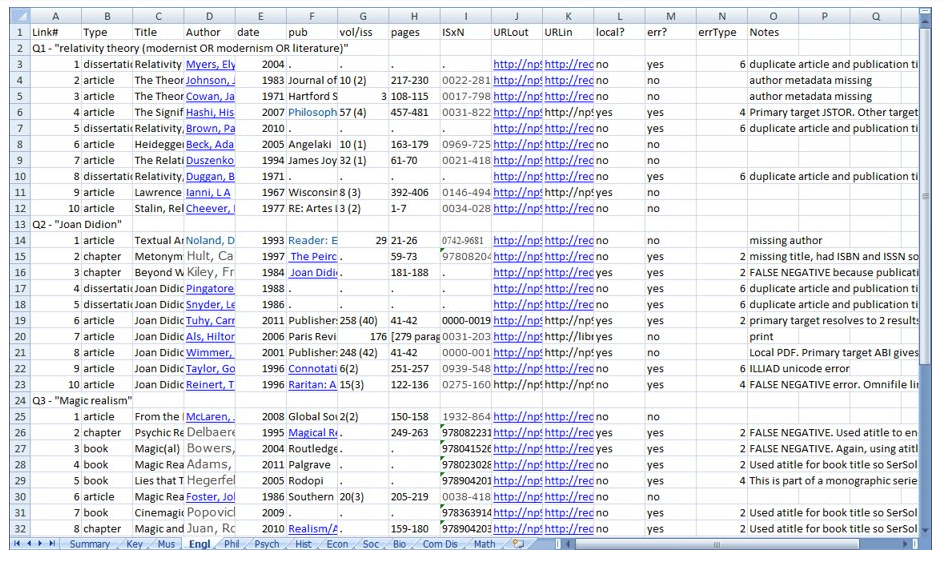
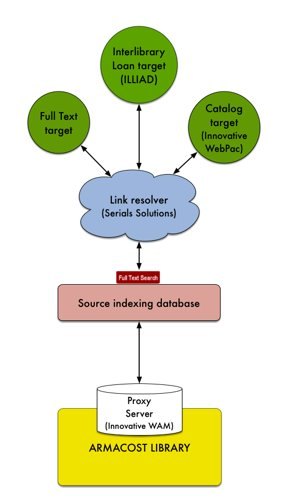
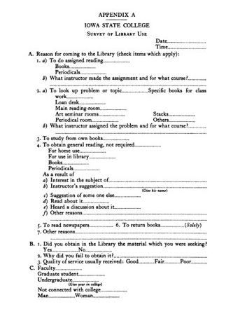
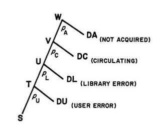

Measuring Electronic Resource Availability
Sanjeet Mann
University of Redlands
SCELC Research Day
March 5, 2013
Armacost Library infrastructure

- ILLIAD interlibrary loan system
- Full text targets (databases, ejournals): 79,757 unique titles
- Serials Solutions 360 Link
- A&I databases: 77,000 titles indexed
- Innovative Interfaces catalog/proxy: 263,575 book/serial titles
Why do electronic resource errors matter?
- Costs
- Frustrated expectations
- Undermined confidence
- Complicated instruction
Research question
"How often does full text linking work?"
Availability studies

- Sample of items
- Available? Yes/No Error?
- Order encountered
- Probabilities
- Prioritize fixes
Development of the availability technique

- Print material availability: Card catalog user surveys (Reviewed in Mansbridge 1986, Nisonger 2007)
- Linear sequence (De Prospo 1973)
- Branching model (Kantor 1976)
- Applied to e-resources: 500 articles from 50 high impact journals (Nisonger 2009)
OpenURL performance

- OpenURL-based reasons for availability error (Wakimoto et al 1998)
- "Digging into the Data" on link resolver failure (Trainor and Price 2010)
- NISO initiatives: KBART, IOTA, PIE-J (Chandler et al 2011, Glasser 2012, Kasprowski 2012)
Usability studies focusing on e-resources
- Database link pages (Fry 2011, Ponsford et al 2011b)
- Resolver menus (O'Neill 2009, Imler & Eichelberger 2011, Ponsford et al 2011a)
- Discovery services (Williams & Foster 2011, Fagan et al 2012)
- Entire process (Kress 2011)
Methodology

Link testing

Error coding
- What is an error?
- Six error categories
- Updated criteria